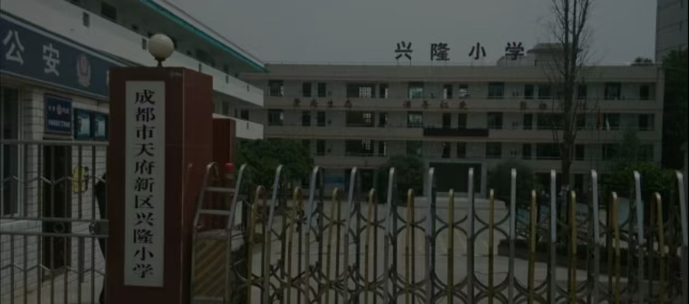
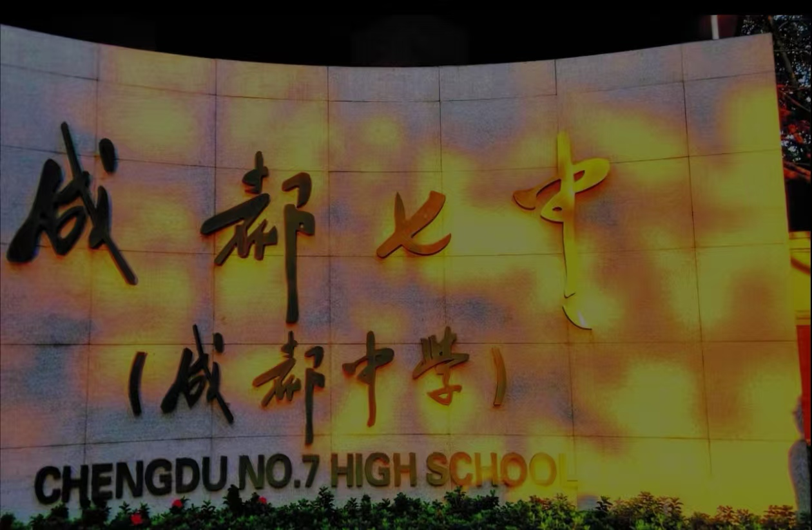

我的成长轨迹 - 从成都到未来
二十载光阴，我在成都这座城市留下了成长的足迹。从兴隆小学的懵懂孩童到成都七中的少年，再到大学探索知识的青年，每一步都伴随着收获与思考。
成长关键词
- 探索：从好奇到热爱的转变
- 坚持：在挫折中学会不放弃
- 感恩：家人与老师的支持
- 成长：技术与心智的双重进步
成长座右铭
"不积跬步，无以至千里；不积小流，无以成江海。"
—— 从小学老师赠予我的书法作品中领悟
成长时间线
2010-2016 兴隆小学
童年启蒙
就读于成都市天府新区兴隆小学，加入绘画社团，获校级美术比赛二等奖。最难忘的是三年级时，在学校艺术节上表演剪纸艺术。
2016-2019 成都七中初中部
少年探索
进入成都七中，开始接触摄影与编程。用攒了三个月的零花钱买了第一台数码相机，拍摄的校园风光作品入选校刊。
2019-2022 成都七中高中部
青春蜕变
高中期间深入学习编程，加入学校技术社团，负责校园网站的维护。在老师指导下完成第一个静态网页设计，获得市级信息技术比赛三等奖。
关键事件：15岁时，用HUAWEI P20拍摄的《成都老街》系列获校园摄影大赛金奖。
2022至今 淮大学
大学启航
主修计算机科学与技术专业，系统学习Web前端开发。加入学校前端开发社团，参与多个校园项目开发，如"校园二手交易平台"前端设计。
未来目标：成为一名优秀的全栈开发工程师，用技术创造价值。
成长中的重要收获
| 时间 | 奖项/事件 | 意义 |
|---|---|---|
| 2015年 | 兴隆小学美术比赛二等奖 | 第一次在艺术领域获得认可，增强自信心 |
| 2017年 | 成都七中摄影大赛金奖 | 发现自己对视觉表达的热爱 |
| 2020年 | 市级信息技术比赛三等奖 | 确认对编程的兴趣，明确专业方向 |
| 2023年 | 校园前端项目优秀成员 | 将理论应用于实践，提升团队协作能力 |